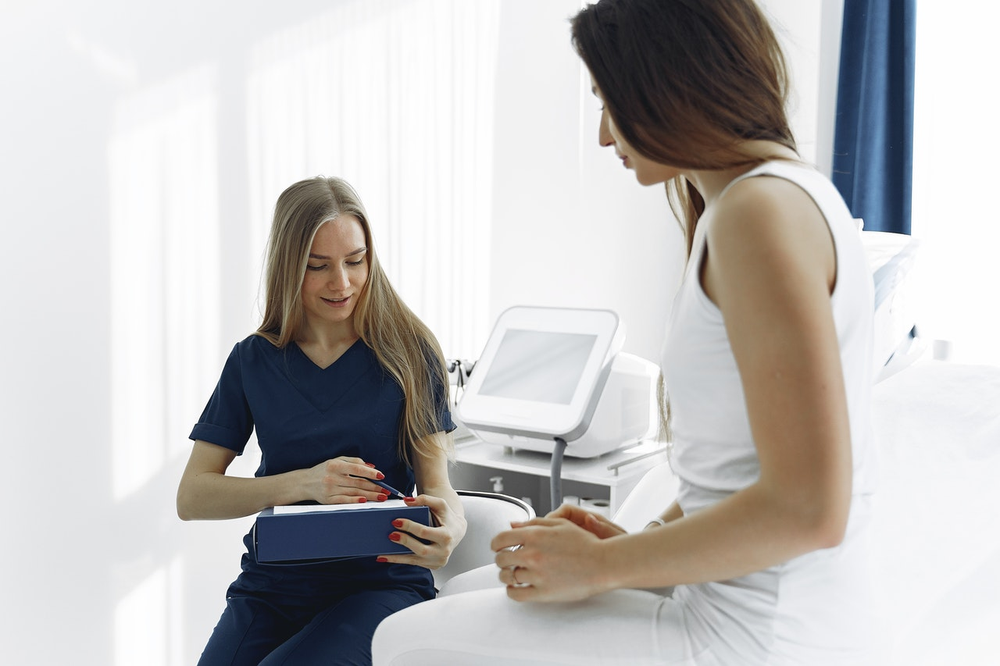
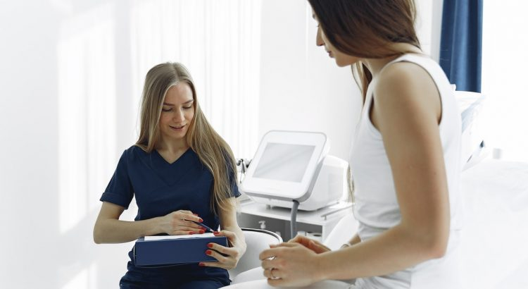

Why Women’s Health is So Important

Access to primary health care and information is vital for women all over the world.Your health should be you’re number one priority.Your mental and physical health are equally critical.Focusing on women’s health doesn’t mean taking resources away from men or ignoring them.It’s admitting that they are different.
Sex and Gender
Although women and men may have similar health issues, they are affected differently.Some health issues are unique to women.Breast cancer, menopause, pregnancy, and cervical cancer are among issues that only affect women.You should be attentive to any potential changes and signs or anything unusual.
Look out for symptoms such as abnormal vaginal discharge, breast lumps, and vaginal burning or itching.If you’re a woman who wants to enjoy glowing health regular check-up is essential.Therefore, women must understand the advantages of regular check-ups.
Cervical Cancer
Cervical cancer screenings and HPV (Human Papillomavirus) screenings are paramount.Human Papillomavirus causes almost all cases of cervical cancer.Examples of cervical cancer symptoms are:
Breast Cancer
Breast cancer is the most diagnosed in women and the most common form of cancer in the world.Some of the symptoms of breast cancer include:
Ovarian Cancer
Ovarian cancer is primarily asymptomatic during the early stages.Therefore, visit an OBGYN Richmond, VA, and get the help you need.The following are examples of ovarian cancer symptoms:
Conditions such as anxiety, depression, urinary tract infections, osteoarthritis, and heart attack are higher in women.Natural variation of hormones can cause anxiety and depression in women.Shifting into menopause can cause depression in women.Untreated perinatal depression can have harmful effects.Therefore, screening both before and after pregnancy is necessary.
Nutrition and Exercise
Eating healthy and exercising prevents many chronic diseases.A well-balanced diet is a key to a healthy body.Some of the illnesses affecting women can be prevented with proper nutrition.Calcium and iron play a significant role in adolescence and early adulthood in women.
During menstruation, you lose a lot of iron.Therefore, it’s important to include calcium and iron-rich foods in your diet.Good calcium sources may consist of vegetables (broccoli), legumes (beans), seeds, and nuts.Leafy vegetables, beef, fish, and poultry are a good source of iron.Heart diseases are a significant threat to loss of life in women.Thus, you should have a low fat and sugar intake.
Before you start an exercising program, you should talk to your doctor.It is crucial, especially if you’re elderly or pregnant.Exercises can help women lose or maintain their weight.Thus, it helps reduce the risk of heart disease as well as boosting good HDL-cholesterol.
Education
In many societies, women are disadvantaged due to discrimination and other sociocultural factors.Lack of proper education plays a significant role in determining women’s health.Poor sanitation can lead to HPV infection leading to cervical cancer.It could also lead to urinary tract infections (UTI) and genital warts.
Women with formal education are more likely to make informed nutritional choices.Educated women have fewer and healthier children.They are also more likely to have higher incomes.Thus, they can afford a good healthcare plan.
Poverty
Although poverty affects both men and women, its impact is more felt by women.Low-income families prefer to educating boys than girls.Thus, affecting their future income as well as their ability to get proper health care.
Low-income and poverty are associated with shorter life expectancy and a high death rate.With the proper knowledge, women can lower their risk of cancers and other common infections.Thus, a global improvement in women’s equity and equality is paramount.Pre-existing conditions such as depression, asthma, and diabetes worsen during pregnancy.Therefore, seeking antenatal advice is essential to pregnant women and new mothers.
Share on Facebook Tweet Follow us
Posted On: 2021-04-01T00:00:00
Posted By: Sierra Powell



Content Date: 2021-04-01
Download Date: 2021-07-08
Document ID: L0C04DIGJ